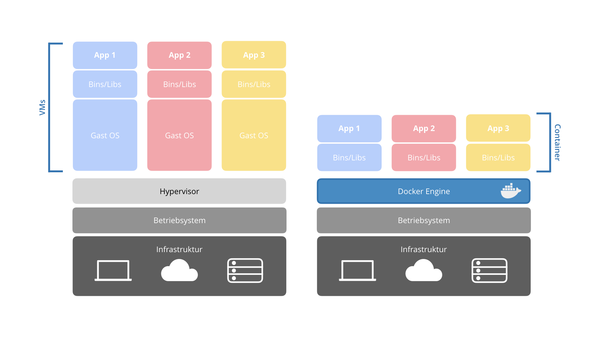

Definition
In diesem Abschnitt erfährst du was Docker ist und wozu man es verwenden kann.
Docker ist ein Open Source-Projekt zur automatisierten Bereitstellung von Anwendungen, die in der Cloud oder lokal ausgeführt werden können. Dazu nutzt Docker sogenannte Container und grenzt sich hiermit unteranderem gegenüber virtuellen Maschinen ab. Docker-Container enthalten eine Software mit all ihren Abhängigkeiten. Dadurch braucht ein Container weniger Ressourcen als eine virtuelle Maschine und ermöglicht das plattformunabhängige Arbeiten. Docker sorgt dafür, dass sich die entwickelte Software auf jedem Gerät exakt gleich verhält. Diese und viele weitere nützliche Eigenschaften, tragen zu dem Erfolg von Docker bei und sorgen dafür, dass die Nutzeranzahl über die letzten Jahre stetig gestiegen ist.
Ein Beispiel: Wenn auf einem Mac mit einer bestimmten Version von PHP Software entwickelt wird, kann es sein, dass diese auf einem Linux Server nicht gleichermaßen läuft. Selbst wenn beide Systeme mit derselben Version von PHP arbeiten, unterscheiden sich beispielsweise Konfigurationen. Dies kann Probleme verursachen und die Behebung dieser Barrieren eine Menge Arbeitsaufwand bedeuten. Docker wird zunehmend populär, weil es für diese Problematik eine Lösung findet.
Warum Docker?
Hier erfährst du, wozu man Docker verwenden sollte und welche Vor- und Nachteile die Containerisierungstechnologie bietet. Es wird auch deutlich, inwiefern sich Docker von virtuellen Maschinen unterscheidet.
Vorteile
Container-Technik
Docker stellt für die jeweiligen Container und Images immer die passende Entwicklungsumgebung her. So werden Frameworks und Libraries geladen, aber nicht benötigte Elemente ignoriert. Durch die Benutzung des Host OS-Kernels fällt auch der Hypervisor weg und wird durch die Docker Engine ersetzt. So können Ressourcen gespart werden, da der Server effizienter genutzt wird.
Docker vs Virtuelle Maschine
Speicherplatz
Container sind in der Regel nicht größer als 100 MB. Virtuelle Maschinen benötigen durch das eigene Betriebssystem mehrere Gigabyte. So kann ein Server viel mehr Container hosten als VMs. Dadurch werden Ressourcen gespart.
Boot-Zeit
Da die Container kein eigenes OS besitzen und recht klein sind benötigen sie nur wenige Augenblicke zum Start, während VMs einige Minuten brauchen bis sie betriebsbereit sind. Dadurch könnte man theoretisch Container beenden um Strom zu sparen und bei Bedarf wieder schnell booten.
Modularisierung
Statt eine komplette und komplexe Applikation in einem Container zu betreiben, arbeiten verschiedene modulare Container zusammen. Dieser sogenannte Mircoservice-Ansatz ermöglicht die Aufteilung von bspw. einer Website mit einer verbundenen Datenbank. So können auch einfach Komponenten geändert oder ausgetauscht werden, ohne die gesamte Applikation umzuschreiben.
Versionierung
Mit Docker können verschiedene Versionen eines Containers erstellt, untersucht und wiederhergestellt werden. Außerdem werden Komponenten aus den vorhergehenden Schichten wiederverwendet, umso den Container schlank zu halten.
Nachteile
“Hauptsache Container” (Hype)
Anstatt die angesprochene Modularisierung von Docker zu nutzen, wird eine gesamte Applikation in einen Container gepackt. In diesem Fall wird nicht das Potenzial von Docker, die Modularisierung durch Container, genutzt.
GUI
Docker ist für Server konzipiert, also Services die ohne Graphical User Interface (GUI) laufen. Deshalb ist die Unterstützung für Applikationen mit einer GUI nicht sehr gut. Anwendungen wie Photoshop können nicht mit Docker genutzt werden.
Root Rechte
Die Engine von Docker, der Docker Daemon, benötigt für den Einsatz root Rechte. Das ist im Prinzip das gleiche wie Administratorrechte auf einem Windows System. Da der Daemon als root läuft, hat jeder Benutzer, der Container starten kann, im Prinzip root-Rechte auf dem System. So kann auf Verzeichnisse zugegriffen werden, in dem bspw. Passwörter gespeichert werden.
Sicherheit
Da Docker ein Open-Source-Projekt ist und eine Menge Entwickler auch an den verschiedenen Images arbeiten, erwartet man, dass es kaum Risiken gibt. Da Anwendungen direkt auf den Host OS-Kernel zugreifen, können jedoch leichter Sicherheitslücken auftreten als bspw. bei einer VM. Deshalb ist ein gewisses Grundvertrauen in die Entwickler eines Images nötig. Teilweise werden Images von Docker auf Docker Hub verifiziert. Diese können bedenkenlos genutzt werden.
Docker ersetzt nicht VMs
Auch wenn Docker immer populärer wird werden Virtuelle Maschinen nicht gleich in großem Maß aussterben. Experten sehen die Zukunft in beiden Technologien, die sich teilweise ergänzen. Docker ist leichter und agiler zu verwenden, als Anwendungen auf VMs. Lorenzo Fontana drückt es so aus: „Container sind Prozesse, VMs sind Server.“
Wer nutzt Docker?
Dieser Abschnitt zeigt, wie populär Docker ist und welche bekannte Unternehmen Docker in ihrem Alltag nutzen.
Docker ist sehr vielversprechend und der Erfolg unbestreitbar. Dafür sprechen die offiziellen Daten der Website des Open-Source-Projekts. Über 80 Milliarden Container wurden bisher heruntergeladen und heute befinden sich über 2 Millionen Images im Docker Hub. Doch nicht nur die über 100 000 Third-Party-Projekte nutzen die Container Software, Docker hat über 650 kommerzielle Kunden. Dazu zählen auch namenhafte Kunden wie PayPal, Visa oder GSK.
Die Popularität von Docker lässt sich am besten mit dem folgenden Diagramm zeigen. Man sieht die Suchhäufigkeit der Begriffe "Docker" und "Virtual Box" im Verlauf der letzten Jahre. Docker, das erst 2013 veröffentlicht wurde, schaffte es innerhalb von nur drei Jahren auf ein ähnlich hohes Suchinteresse wie die beliebteste virtuelle Maschine Virtual Box.
Ein wichtiger Faktor für den Erfolg ist auch die Docker-Community. Mit 32 000 Sternen auf GitHub und über 200 Meetups hat Docker eine solide Basis an Beitragenden. Jährlich findet auch aus diesem Grund eine DockerCon statt, auf der Neuerungen vorgestellt werden und Workshops stattfinden. Bei Docker handelt es sich also längst nicht mehr um ein Nischenprodukt, sondern um eine Lösung, die lange Zeit gesucht wurde. Das zeigt auch die Zahl der Docker Job Angebote, die seit Veröffentlichung um 77 000 % gestiegen sind.